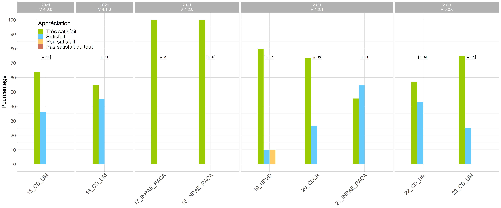

4 Aspects pratiques
4.1 Modalités d’enseignement
La formation est conçue pour être donnée aussi bien en présentiel qu’en distanciel, pour un public d’un maximum de 15 personnes, limite au-delà de laquelle la qualité de l’accompagnement individuel décroit. En présentiel, elle nécessite une salle équipée d’un vidéoprojecteur et d’une connexion internet, et d’un ordinateur par personne. En distanciel, chaque participant-e doit se munir de deux écrans (un écran pour visualiser l’enseignement, un écran pour taper le code). L’outil utilisé pour le distanciel est zoom, car il s’est montré robuste et ces fonctionnalités adaptées à ce type de formations: partages d’écrans, possibilité de contrôle à distance des écrans des participant-e-s, fenêtre de discussion pour partager du code ou des instructions, tableau blanc, outils d’annotation nombreux. Les instructions pour l’installation des logiciels et packages, les données qui servent de support pour la formation, le pdf à imprimer contenant le code de la formation (hors exercices) et servant à prendre des notes, ainsi que le document Rmarkdown servant de modèle pour taper le code lors de la formation sont envoyées à chaque participant-e une semaine avant la formation. Si vous optez pour la formule 3 jours, il est possible de laisser passer une semaine entre les deux premiers jours et le troisième afin de permettre aux participant-e-s de se confronter à l’écriture de leur propre code et ce faisant d’identifier les besoins particuliers à leurs analyses.
4.2 Qui suis-je?
Oswaldo Forey, titulaire d’un master en écologie et d’un doctorat en agronomie, chercheur indépendant en philosophie des sciences appliquée à l’agroécologie et formateur au Tidyverse depuis 2018. Je dispense cette formation au sein de ma micro-entreprise (n°SIRET: 499 165 215 00025), également organisme de formation (enregistré sous le numéro 84260289926. Cet enregistrement ne vaut pas agrément de l’Etat). J’ai donné cette formation à 21 reprises, pour un total de 308 heures et de 338 participant-e-s formé-e-s.

4.3 Appréciation de la formation
La figure 6 montre les résultats des enquêtes de satisfaction issus des 13 sessions pour lesquelles l’évaluation de la formation a été conduite. L’évaluation de la formation est maintenant systématique.
 Figure 6: Appréciations de la formation par les participant-e-s pour les 13 évaluations en ma possession par année. Les boites au dessus de chaque session indiquent le nombre de personnes ayant répondu à l’enquête.
4.4 Coût de la formation
Le coût de la formation est de 1500€ pour la formule 2 jours et 2250€ pour la formule 3 jours, à quoi s’ajoutent les frais de déplacement calculés au réel pour les interventions à plus de 300km de mon domicile. Un service après-vente est également proposé après la formation pour accompagner les participant-e-s à distance. Les trois premières heures sont offertes, ce qui correspond globalement à deux échanges à distance et deux propositions d’amélioration du code, les heures suivantes sont facturées 40€ de l’heure. La procédure de certification qualité Qualiopi de mon organisme de formation (https://travail-emploi.gouv.fr/formation-professionnelle/acteurs-cadre-et-qualite-de-la-formation-professionnelle/article/qualiopi-marque-de-certification-qualite-des-prestataires-de-formation) est en cours et sera finalisée à la fin du premier semestre 2021. En plus d’un gage de qualité, cette certification permettra la prise en charge du coût de la formation par les OPCO.
4.5 Contacts
M Oswaldo FOREY
1300 route de Collonge
26260 Saint-Donat-Sur-l’Herbasse
oswaldoforey@gmail.com
tel : 04 27 63 96 07
Site internet : https://oswaldoforey.github.io/Website_bookdown/